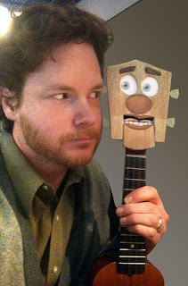

Huey Ukulele debut
2/2/2011
From Ted Nunes:
Last night my ukulele band, The Ukedelics, played a show at a senior center, and for our second number my new little partner, Huey Ukulele, made his debut. We did about a minute routine before launching into song. I've gotten very at ease playing and singing in front of an audience, but I was pretty nervous with Huey - a decidedly different experience. I forgot a few jokes, but the song went smoothly, so I was happy for my first vent outing (since I was a kid). It was a big plus having extra players around me since I'm still mastering playing Huey as a ukulele AND making him talk AND sing...it's as hard as you might think.
After the show people came up to say hi and thanks, etc. A little boy asked to meet Huey. He was interested to see how he worked. I thought it was great that he not only saw a character that he liked, but he registered that it was a thing that I was controlling and he wanted to figure out how it worked. That's the sort of thing that got me hooked into ventriloquism. Ah well, you never know where that curiosity can lead.
{kind=link}

Last night my ukulele band, The Ukedelics, played a show at a senior center, and for our second number my new little partner, Huey Ukulele, made his debut. We did about a minute routine before launching into song. I've gotten very at ease playing and singing in front of an audience, but I was pretty nervous with Huey - a decidedly different experience. I forgot a few jokes, but the song went smoothly, so I was happy for my first vent outing (since I was a kid). It was a big plus having extra players around me since I'm still mastering playing Huey as a ukulele AND making him talk AND sing...it's as hard as you might think.
After the show people came up to say hi and thanks, etc. A little boy asked to meet Huey. He was interested to see how he worked. I thought it was great that he not only saw a character that he liked, but he registered that it was a thing that I was controlling and he wanted to figure out how it worked. That's the sort of thing that got me hooked into ventriloquism. Ah well, you never know where that curiosity can lead.